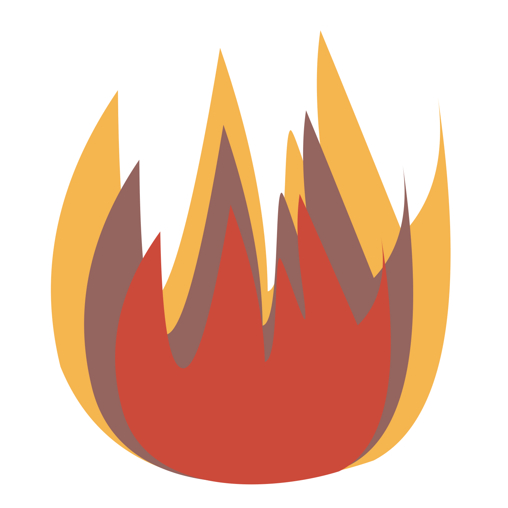

|  |
Jorge Adrián Botello Rueda |
|
|
|
| Facilitador de Moldeo en la empresa Evercast de grupo GIS, donde desempeñé la función de supervisor en el área de producción por fundición de componentes automotrices de hierro nodular. | |
| 2014-2016 | Becario en el museo de Universum perteneciente a la Dirección General de Divulgación Científica (DGDC) de la UNAM |
| Práctica profesional en la empresa Industrial Minera México S.A. de C.V. Unidad Charcas S.L.P. Asistencia en el departamento de Molino, | |
| |
Durante mi formación he desarrollado habilidades de interpretación metalográfica, ejecuté y analicé diferentes pruebas mecánicas (impacto, dureza, tracción, entre otras). Soy capaz de desarrollarme en ambientes competitivos y tengo facilidad para aplicar conocimientos teóricos y empíricos para la resolución de problemas. Tengo experiencia transmitiendo conocimientos y la facilidad para hacer ver conceptos complicados como sencillos sin perder la parte formal del conocimiento, haciendo énfasis en la práctica experimental, ya que durante mi formación pertenecí a diferentes laboratorios químicos y de materiales. He participado en el diseño, construcción y desarrollo de prototipos de laboratorio, y su implementación a nivel de investigación o docencia.